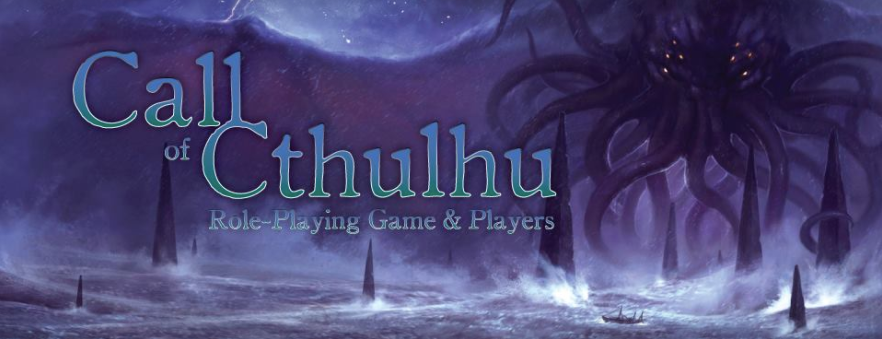

La llamada de Cthulhu

La llamada de Cthulhu es un juego de rol de horror cósmico basado en las obras del escritor H.P. Lovecraft. Los jugadores interpretan investigadores que se enfrentan a misterios sobrenaturales y entidades cósmicas incomprensibles. A diferencia de otros juegos de rol, aquí el conocimiento puede ser más peligroso que la ignorancia, y la cordura de tu personaje está constantemente en riesgo. El objetivo no siempre es ganar, sino sobrevivir con la mayor cordura posible mientras desentrañas misterios que pueden destruir tu mente.
Set de Dados
Los dados recomendados para jugar son:
| Forma | Abreviatura | Nombre Completo |
|---|---|---|
| 1d20 | 1 Dado 20 caras | |
| 2d10 | 2 Dados 10 caras (unidades y decenas) | |
| 1d8 | 1 Dado 8 caras | |
| 1d6 | 1 Dado 6 caras | |
| 1d4 | 1 Dado 4 caras |
No tienes que limitarte a solo un set, es muy común necesitar 2, 3 o mas copias de un mismo dado con forme nuestros ataques van subiendo de nivel.
No te preocupes si necesitas mas de un dado para alguna tirada y no lo tienes, siempre puedes tirar el mismo dado mas de una vez o pedir prestado uno a un compañero o DM
Creación de Personaje
Características
Las caracteristicas son lo que describe el estado físico y mental del investigador.
Fracciones se redondean hacia abajo
Valores
Todas la características y habilidades tienen un valor base entre 0 y 99, entre mas alto indica que la persona es mas capas o tiene mejor rendimiento en las situaciones que requieran la característica o habilidad.
Este valor viene acompañado de su mitad (Difícil) y su quinta parte (Extremo), estos valores son utilizados en lugar del valor base para situaciones donde sea mas complicado realizar la acción, deberás obtener un resultado igual o menor a estos valores para tener éxito y a asi mismo, cuando algo no tenga una complicación, obtener un resultado en estos rangos significara tener un mayor éxito con posible mejores consecuencias.
Valores Estándar
Al momento de crear un investigador este tendrá definidas una serie de valores para sus caracteristicas, estos valores se obtienen de tiradas de dados si se quiere dejar al azar o también es posible utilizar la siguiente lista predefinida y repartir los valores en las caracteristicas a conveniencia.
Si deseas tirar los dados las cantidades serian:
STR - 3D6 * 5
CON - 3D6 * 5
SIZ - (2D6 + 6) * 5
DEX - 3D6 * 5
APP - 3D6 * 5
INT - (2D6 + 6) * 5
POW - 3D6 * 5
EDU - (2D6 + 6) * 5
Mecánicas
Tiradas
Los dados principales son los porcentuales 2d10 (1 Decenas y 1 Unidades), lanzar un valor menor de tu característica o habilidad es un éxito, lanzar un valor mayor es un fracaso.
 1D10 de Unidades 0 a 9 (de 1 en 1)
1D10 de Unidades 0 a 9 (de 1 en 1)
 1D10 de Decenas 00 a 90 (de 10 en 10)
1D10 de Decenas 00 a 90 (de 10 en 10)
Lectura de las Tiradas
- 0 + 00 -> 100
- 1 + 00 -> 01
- 0 + 70 -> 70
- 3 + 60 -> 63
- 5 + 00 -> 05
Fallas totalmente la tirada, sin opción a usar suerte, si la dificultad de la tirada es:
- mayor o igual a 50% y sacas 100 Natural
- menor a 50% y sacas entre 96 y 100 Natural
Tu acción falla totalmente.
Si al tirar obtienes un 01 Natural tienes un éxito absoluto en lo que estás haciendo
Lectura de las Tiradas
Tiradas Forzadas (Push Rolls)
Cuando fallas una tirada de habilidad, puedes optar por "forzar" la tirada para intentarla una segunda vez, pero con consecuencias.
Cómo Funciona:
- Fallas una tirada de habilidad
- Declaras que quieres forzar la tirada
- El Guardián describe las posibles consecuencias del fracaso
- Tiras de nuevo con los mismos dados
Resultados Posibles:
- Éxito: Logras tu objetivo pero con complicaciones menores
- Fracaso: Sufres las consecuencias descritas por el Guardián (daño, pérdida de Cordura, complicaciones narrativas, etc.)
Restricciones:
- Solo puedes forzar cada tirada una vez
- No puedes forzar tiradas de Cordura, Suerte, o tiradas de característica
- Algunas situaciones no permiten tiradas forzadas (a discreción del Guardián)
Ejemplo
Intentas abrir una cerradura y fallas. Puedes forzar la tirada, pero el Guardián te advierte que si fallas, la ganzúa se romperá y harás ruido que alerte a los guardias.
Sistema de Dificultad
Las tiradas en Call of Cthulhu tienen diferentes niveles de dificultad:
Tiradas Opuestas
Cuando dos personajes compiten directamente:
- Ambos tiran sus habilidades relevantes
- El que obtenga el mejor nivel de éxito gana
- En caso de empate, gana quien tenga la habilidad más alta
Orden de Éxitos (de mayor a menor):
- Éxito Extremo
- Éxito Difícil
- Éxito Regular
- Fracaso
Uso de la Suerte
La Suerte es un recurso limitado que puedes gastar para mejorar tus resultados:
Gastos Comunes:
- Evitar daño: Gasta Suerte para reducir el daño recibido punto por punto
- Modificar tiradas: Gasta Suerte para mejorar el resultado de una tirada
- Evitar consecuencias: Gasta Suerte para evitar efectos negativos menores
Recuperación:
- La Suerte se recupera lentamente durante el juego
- Actos heroicos pueden restaurar puntos de Suerte
- Al inicio de cada escenario sueles recuperar algo de Suerte
Administra tu Suerte
La Suerte es un recurso finito. Úsala sabiamente en momentos críticos.
Cordura (Sanidad)
La Cordura es uno de los elementos más importantes del juego. Representa la estabilidad mental de tu investigador ante los horrores cósmicos que enfrentará.
Valor Inicial: Tu Cordura inicial es igual a tu POD (Poder).
Pérdida de Cordura:
- Horrores menores: 1d4 puntos de Cordura
- Horrores mayores: 1d10 puntos de Cordura
- Entidades cósmicas: 1d20 o más puntos de Cordura
- Conocimiento prohibido: Variable según lo aprendido
Tipos de Pérdida:
- Temporal: Se puede recuperar con descanso y tiempo
- Permanente: Pérdida definitiva que reduce tu Cordura máxima
Efectos de la Pérdida:
- Pérdida de 5+ puntos en una tirada: Tirada de Cordura o sufrir un episodio de Locura Temporal
- Pérdida del 20% (1/5) o más de tu Cordura total: Tirada de cordura, si falla desarrollar una Fobia o Manía permanente o episodio de locura mayor.
- Cordura 0: Tu investigador queda permanentemente loco y fuera de tu control
¡Cuidado!
La pérdida de Cordura es acumulativa. Cada encuentro sobrenatural te acerca más a la locura total.
Combate Básico
Iniciativa: Se determina por DEX, actuando de mayor a menor.
Ataques:
- Tirada de habilidad de combate correspondiente
- Éxito, impactas al objetivo
- Tira daño según el arma utilizada
- En ataque cuerpo a cuerpo sumas tu Daño Base (DB) a la tirada de daño
Defensa:
- Esquivar: Usar habilidad de Esquiva
- Pelear: Contraatacar con arma de combate cuerpo a cuerpo
- Bloquear: Si tienes escudo o arma defensiva
Daño y Heridas:
- Heridas menores: Hasta la mitad de tus PV
- Heridas mayores: Más de la mitad de tus PV (tirada de CON o quedar inconsciente)
- Muerte: 0 PV o menos
Locura Temporal
Cuando fallas una tirada de Cordura tras perder 5+ puntos, sufres un episodio de locura:
Duración: 1d10 rounds + minutos igual a la Cordura perdida
Efectos Aleatorios (1d10):
- Desmayo: Caes inconsciente
- Huida: Corres despavorido
- Estupor: Quedas paralizado por el terror
- Ataque de pánico: Gritas y actúas erráticamente
- Amnesia: Olvidas los últimos eventos
- Fobia temporal: Terror irracional a algo específico
- Comportamiento repetitivo: Repites una acción constantemente
- Alucinaciones: Ves u oyes cosas que no están ahí
- Violencia: Atacas a todo lo que se mueva
- A elección del Guardián: Efecto apropiado para la situación
Recuperación
Después del episodio, realizas una tirada de Cordura. Si tienes éxito, recuperas 1d3 puntos de Cordura perdidos en el encuentro.